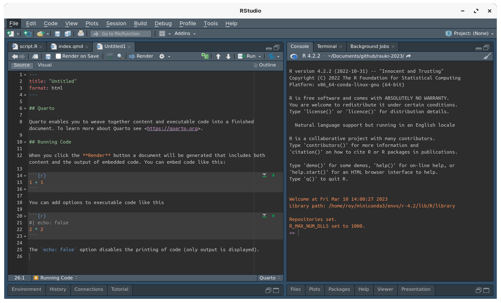

[1] "Tue Feb 20 17:14:57 2024"Literate programming with Quarto
RaukR 2024 • Advanced R for Bioinformatics
19-Feb-2024
How it all works

Markdown
Human readable markup
### Heading 3
#### Heading 4
*italic text*
**bold text**
`code text`
~~strikethrough~~
2^10^
2~10~
$2^{10}$
$2_{10}$ Heading 3
Heading 4
italic text
bold text
code text
strikethrough
210
210
\(2^{10}\)
\(2_{10}\)
$\sum\limits_{n=1}^{10} \frac{3}{2}\cdot n$
- bullet point
Link to [this](somewhere.com)

{width="50%"}Installation
- Install the latest quarto executable
- R package quarto to run quarto from R
- If using RStudio, you need a version v2022.07.1 or newer
- Optionally, Visual Studio Code along with quarto extension is a great option too


Compared to Rmd
- Quarto is a command-line tool independent of R
- Supports multiple languages seamlessly (R, Python, Julia, Observable)
- YAML options maybe slightly different in quarto. Quarto uses hyphens instead of underscores.
toc_depthbecomestoc-depthnumber_sectionsbecomesnumber-sectionscode_foldingbecomescode-fold
- Chunk options are specified inside the chunk like
#| echo: falserather thanr{echo=FALSE} - Many more chunk options are available including figure captions and layout
- CSS classes are easier to use using
:::notation - Many additional functionality out of the box
- Page layouts
- Figure layouts
- Figure captions and numbering
- Call-Outs
- Cross referencing
- Citation
- Bibliography
- Margin content
- Quarto supports htmlwidgets in R and jupyter widgets for Python/Julia
- Interactivity
- Client-side interactivity using ObservableJS
- Server-side interactivity using Shiny